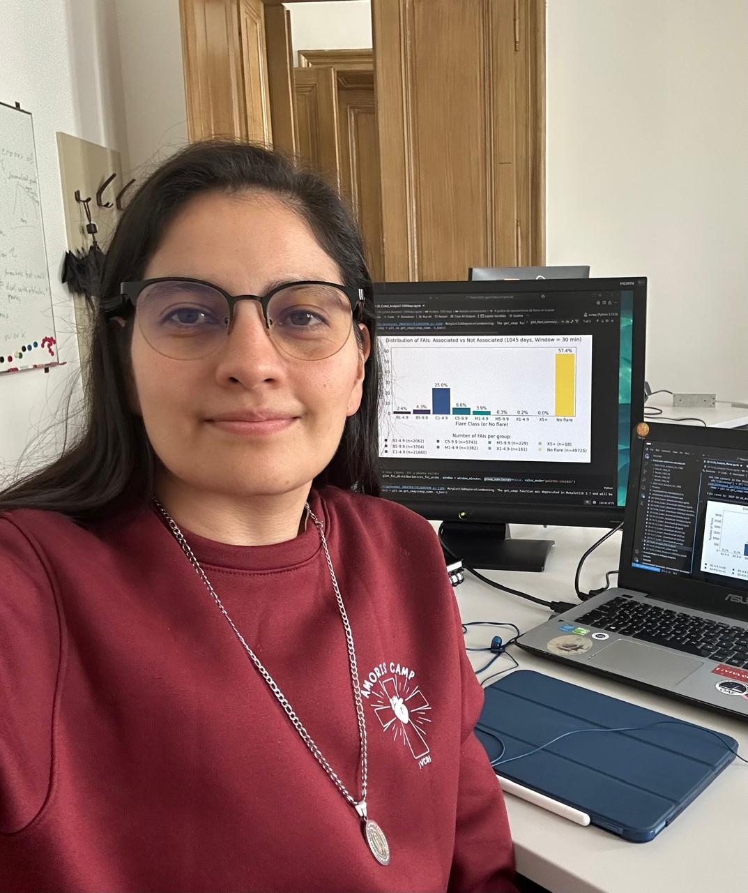

Proyecto DynaSunDynaSun Project
DynaSun (Dynamics of the Solar Corona in the Era of Data Intensive Observations) es un consorcio internacional de investigación que reúne nodos en Sudamérica y Europa bajo el programa Marie Skłodowska-Curie Staff Exchanges – Horizon Europe.
El objetivo del proyecto es fortalecer la colaboración entre grupos líderes en física solar y generar conocimiento sobre los procesos dinámicos de la atmósfera solar. Esto permite que investigadores y miembros participantes realicen intercambios sistemáticos, utilizando datos e instalaciones de vanguardia, incluyendo técnicas innovadoras de aprendizaje automático (machine learning).
Objetivos Específicos
- Pulsaciones cuasi-periódicas en fulguraciones solares.
- Calentamiento por ondas y acoplamiento a la atmósfera inferior.
- Desarrollo de la morfología tridimensional de CME y oscilaciones cinemáticas.
- Formación de profesionales altamente calificados y vinculación con la comunidad.
Instituciones Participantes
El proyecto es coordinado por KU Leuven (Bélgica):
- Max Planck Society (Alemania)
- CONICET (Argentina)
- University of Graz (Austria)
- Universidad Nacional de Colombia (Colombia)
- Northumbria University (Reino Unido)
- University of Warwick (Reino Unido)
- University of South Bohemia (Chequia)
- Astronomical Institute of the Czech Academy of Sciences (Chequia)
DynaSun (Dynamics of the Solar Corona in the Era of Data Intensive Observations) is an international research consortium bringing together nodes in South America and Europe under the Marie Skłodowska-Curie Staff Exchanges – Horizon Europe program.
The project's goal is to strengthen collaboration between leading groups in solar physics and generate knowledge about the dynamic processes of the solar atmosphere. This allows researchers and participating members to carry out systematic exchanges, using cutting-edge data and facilities, including innovative machine learning techniques.
Specific Objectives
- Quasi-periodic pulsations in solar flares.
- Wave heating and coupling to the lower atmosphere.
- Development of three-dimensional CME morphology and kinematic oscillations.
- Training of highly qualified professionals and community engagement.
Participating Institutions
The project is coordinated by KU Leuven (Belgium):
- Max Planck Society (Germany)
- CONICET (Argentina)
- University of Graz (Austria)
- National University of Colombia (Colombia)
- Northumbria University (United Kingdom)
- University of Warwick (United Kingdom)
- University of South Bohemia (Czech Republic)
- Astronomical Institute of the Czech Academy of Sciences (Czech Republic)
Colaboraciones InternacionalesInternational Collaborations
El Grupo de Astrofísica Solar (GoSA) ha desarrollado una red de colaboraciones internacionales con investigadores e instituciones de diversos países, generando productos académicos de alto impacto entre 2012 y 2022.
Países Co-Investigadores


Productos Académicos del GoSA (2012-2022)
29
Tesis Pregrado
17
Tesis Maestría
25
Tesis Maestría Enseñanza
35
Artículos Científicos
39
Memorias en Congresos
16
Divulgación
Actividades Destacadas
- 154 participaciones en eventos científicos internacionales.
- 24 eventos científicos organizados por el grupo.
The Solar Astrophysics Group (GoSA) has developed a network of international collaborations with researchers and institutions from various countries, generating high-impact academic products between 2012 and 2022.
Co-Investigating Countries
GoSA Academic Products (2012-2022)
29
Undergrad Theses
17
MSc Theses
25
MSc Science Teaching
35
Scientific Articles
39
Conference Memories
16
Outreach
Key Activities
- 154 participations in international scientific events.
- 24 scientific events organized by the group.
Miembros participantes en DynaSunMembers participating in DynaSun
Benjamín Calvo Mozo
Investigador PrincipalPrincipal Investigator
Santiago Vargas Domínguez
Investigador PrincipalPrincipal Investigator
Javier Sánchez González
EgresadoAlumnus
Participación DynaSun 2025DynaSun 2025 participant
Julio Flórez Macías
Estudiante de PosgradoGraduate Student
Participación DynaSun 2026DynaSun 2026 participant
Daniel Alberto Rodríguez Torres
Estudiante de PosgradoGraduate Student
Participación DynaSun 2026DynaSun 2026 participant
Carlos Alberto Martínez Sibaja
Estudiante de PosgradoGraduate Student
Participación DynaSun 2026DynaSun 2026 participant
Juan Sebastián Hincapié
Chequia / Alemania
CAS / Max Planck Institute
Implementación de software para antena RT2 y estudio de estructuras solares con MiHI.
RT2 antenna software implementation and solar structure study with MiHI.
Juan Esteban Agudelo
Alemania
Max Planck Institute (MPS)
IA para invertir parámetros de Stokes. Premio AstroCO 2025 al mejor trabajo estudiantil.
AI for Stokes inversion. AstroCO 2025 Award for best student work.

Paula Jessica González
Austria
University of Graz
Evaluación del Flare Anticipation Index (FAI) mediante datos históricos del satélite GOES.
Evaluation of Flare Anticipation Index (FAI) using satellite data (GOES).
Óscar Andrés Calvo
Alemania / Bélgica
MPS / KU Leuven
Estudio de umbral dots con GREGOR y análisis de oscilaciones transversales cromosféricas.
Umbral dots study with GREGOR and transverse chromospheric oscillations analysis.
Laura Camila Palacino
Chequia
Czech Academy of Sciences
Análisis de vibraciones en antena RT5 e investigación en magnetohidrodinámica (MHD).
RT5 antenna vibration analysis and magnetohydrodynamics (MHD) research.
Andrés Felipe Guerrero
Bélgica
KU Leuven
Análisis de datos de Parker Solar Probe y estudio de turbulencia en el viento solar.
Parker Solar Probe data analysis and solar wind turbulence study.